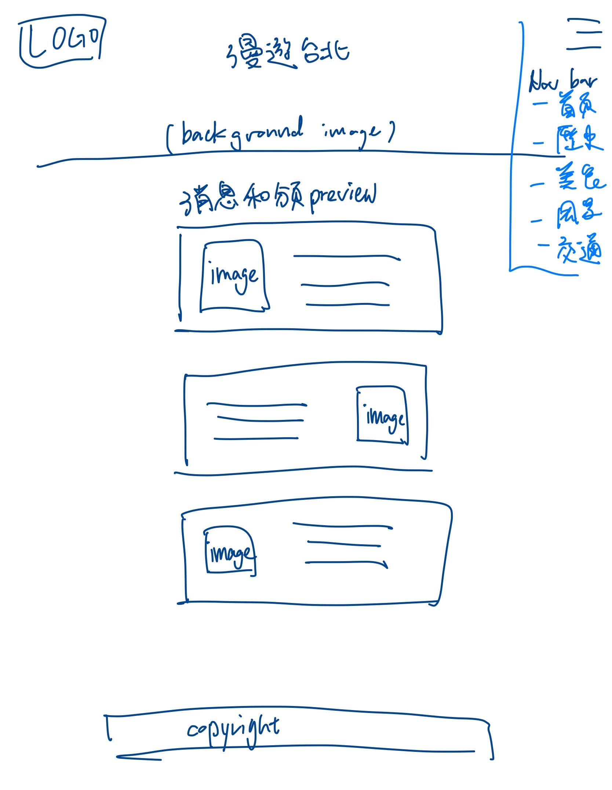
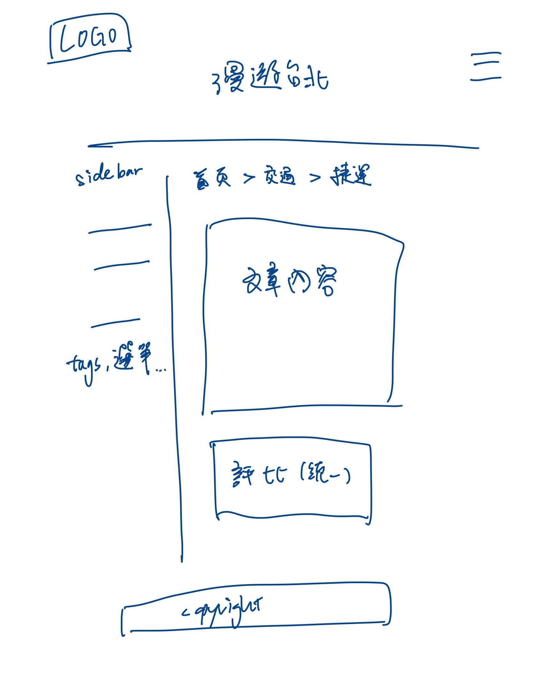

1. 期末網站資訊
- 網站主題名稱：漫遊台北 - 深度旅遊指南
- 網站目標與動機：
目標：建立一個「在地視角」的旅遊指南，整合交通與美食資訊，幫助使用者進行城市探索。
動機：我有進行一些交換生的事務，完整地介紹我的家鄉給他們卻有些困難； 另外，許多同學朋友也來自外縣市，一個好的旅遊指南相信也能輔助他們認識這座城市。
- 期末網站 URL：
https://circuitcortex.github.io/
(註：實際作業將存放於 repo 的子目錄中)
2. 網站內容與架構規劃
本網站預計包含以下 6 個頁面：
| 頁面名稱 | 檔案名稱 | 內容大綱與素材來源 |
|---|---|---|
| 首頁 | index.html | 網站主視覺。圖片來源：Pixabay等素材庫。 |
| 歷史古蹟 | history.html | 介紹龍山寺、剝皮寮老街。素材：圖庫或自行拍攝照片 + 維基百科文字改寫。 |
| 文創園區 | creative.html | 松山文創與華山園區介紹。素材：官方網站資訊整理。 |
| 自然風光 | nature.html | 陽明山、四獸山介紹。素材：圖庫或自行拍攝照片 + 維基百科文字改寫。 |
| 夜市美食 | food.html | 必吃小吃評比表 (Table製作)。素材：素材庫或自行拍攝食物照片。 |
| 交通攻略 | transport.html | 捷運路線圖 (Image Map)、YouBike 站點。素材：台北捷運官網圖資。 |
3. 網頁版面配置 (Layout 結構圖)
以下為手繪/軟體繪製之網頁架構預想圖：


4. 網站建置時程進度表
| 預定日期 | 工作項目 | 進度狀態 |
|---|---|---|
| 2025/12/09 | 完成企劃書 (proposal.html) 與機測，確立網站架構 | 已完成 |
| 2025/12/10 - 12/15 | 收集素材 (拍攝照片、撰寫文案)、尋找授權圖片 | 規劃中 |
| 2025/12/16 - 12/20 | 完成首頁 (index.html) 切版與 CSS 主視覺設計 | 規劃中 |
| 2025/12/21 - 12/25 | 製作內頁 (美食、交通、景點)，套用統一 CSS 樣式 | 規劃中 |
| 2025/12/26 - 12/29 | 加入 JavaScript 互動功能、檢查 RWD 手機版顯示 | 規劃中 |
| 2025/12/30 | 最終測試與上傳 GitHub，準備現場繳交 | 預定截止 |